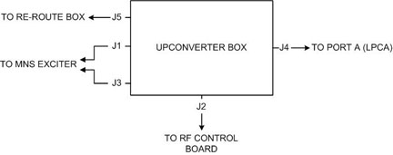

Table 2: MNS Upconverter Cable Connections
| Cable Part Number | Cable Run Number | J# on MNS Upconverter | To be connected to | Description |
| 5166749-5, -8 | M1308 | J3 | J31 of PEN Cabinet wall via overhead cable track | MNS LO |
| 5169804-22, -31 | M1309 | J1 | J33 of PEN Cabinet wall via overhead cable track | MNS Loopback |
| 5181541 | M3356 | J2 | J11 - Slot 11 board of RF Hub | Power and Controls for MNS Upconverter |
| 5191729-2 | [None] | J4 | LPCA Connector A via LPCA cable track | 8W8 Rx signal input from connector A |
| 5191729-3 | [None] | J5 | J8 of Re-route Box | 8W8 Upconverter signal output |
| NOTE: | On the RF control board, some cables may be need to be disconnected to properly connect the MNS upconverter cables. Reconnect these cables once the upconverter is fully installed. |
Illustration 16: Upconverter Box Diagram

| NOTE: | This diagram illustrates the upconverter box as viewed from the patient end. |